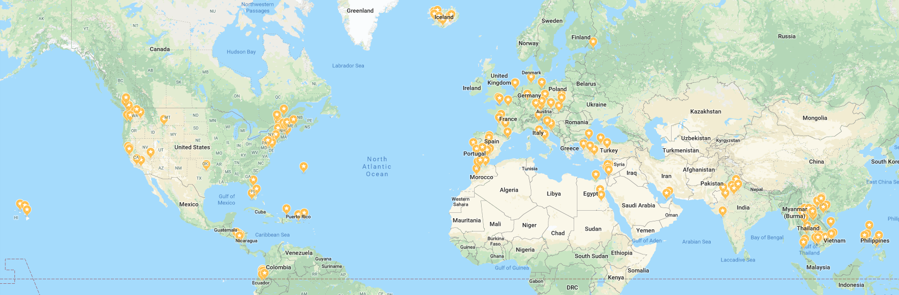

Travel Destinations

“Travel is fatal to prejudice, bigotry, and narrow-mindedness, and many of our people need it sorely on these accounts. Broad, wholesome, charitable views of men and things cannot be acquired by vegetating in one little corner of the earth all one's lifetime.” -Mark Twain
When I travel, I learn more about culture, people, and differences than I ever could from a textbook. Nothing can replace seeing different parts of the world in person. You cannot truly understand how others live until you live with them. I am so grateful to have had the opportunity to visit so many countries and I thank my parents for inspiring this passion for me. All over the world, people show kindness and selflessness, regardless of race, religion, or culture.
Backpacking for 6 Months
I finished college in three in a half years so I could give myself the opportunity to explore the world afterwards. From India, to Southeast Asia, to Europe, I traveled with my mom, my best friend, and then alone, but always surrounded by fellow travelers and people. I went to 16 countries and stopped in 90 cities, villages, or towns. I was thrown out of my comfort zone in places with no electicity, language barriers, new people. And yet, in the face of the unknown, I lived truly happy, without worry, learning the culture, breathing the air, learning languages, meeting people. One of fondest memories is trying Couchsurfing in Germany. I stayed with a local musician who I asked to stay with for only one night. I ended up staying there for 3 days due to her hospitality. She showed me the city, introduced me to her friends, gave me a bed and cooked for me. Not only this, but she inspired me to try hitchhiking (which leads me to my next prominent memory). I got picked up by a wonderful German woman in Hamburg who drove me all the way to Berlin. She worked as a lawyer and told me about her life growing up in Germany during WW2. Not only did I check off two things off of my "bucket list," but met two execptional people who I now consider lifelong friends.
I cannot describe the feeling when I visit somewhere new. It is almost like a child seeing the world for the first time. The image above is a snapshot of the places I've been. It might seem like a lot for a 22 year old, but the majority of the map is still empty!